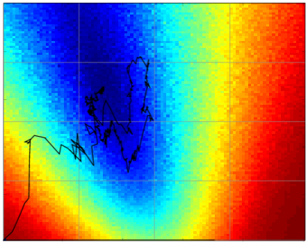

Gustavo T. Pfeiffer

In this page I list some of the research I did at the Computer Graphics Laboratory (LCG) of the Federal University of Rio de Janeiro (UFRJ), at the Applied Mathematics Laboratory (LABMA) of UFRJ, and at the Y. Sato Laboratory of the University of Tokyo.
My research ranges from nonlinear optimization and probabilistic analysis to inverse computer graphics and computer vision.
Although I am not currently in the academia, I still continue my research on stochastic optimization.
Contact
- E-mail: gustavo_tp "at" poli.ufrj.br
Research
Stochastic Optimization


- G. Pfeiffer, R. Marroquim, and A. A. F. de Oliveira, "WebcamPaperPen: A low-cost graphics tablet," (presentation, video, suppl. material) in 27th SIBGRAPI - Conference on Graphics, Patterns and Images, 2014. pp. 87–94.
- See also: Graduation Project, 2014: dissertation, presentation
- See also: Project webpage with downloads and source code.
Physically-based Appearance Modeling

Probabilistic Analysis of Matching Problems

Texture Registration

- R. Marroquim, G. Pfeiffer, F. Carvalho, and A. A. Oliveira, "Texturing 3D models from sequential photos," The Visual Computer, vol. 28, no. 10, pp. 983–993, 2012.
- R. Marroquim, G. Pfeiffer, F. Carvalho, and A. Oliveira, "Texturing 3D models with low geometric features," in 24th SIBGRAPI - Conference on Graphics, Patterns and Images, 2011. pp. 1–8.
History Matching (Petroleum Reservoir Engineering)

- F. Dickstein, P. Goldfeld, G. T. Pfeiffer, and R. V. Pinto, "Truncated conjugate gradient and improved LBFGS and TSVD for history matching," Computational Geosciences, vol. 22.1, pp. 309-327, 2018.
- F. Dickstein, P. Goldfeld, G. T. Pfeiffer, and R. V. Pinto. "Truncated Conjugate Gradient Method for History Matching in Reservoir Simulation," CNMAC 2016.
-
F. Dickstein, P. Goldfeld, G. T. Pfeiffer, E. P. S. Amorim, R. W. dos Santos and S. G. Gómez, "A study of the impact of 4d-seismic data on TSVD-based schemes for history matching," in SPE Latin American and Caribbean Petroleum Engineering Conference. Society of Petroleum Engineers, 2010.